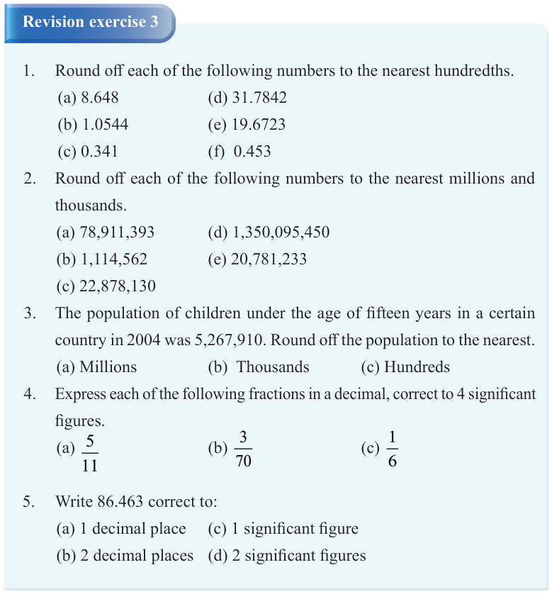

(iii) Any digit from 1 to 9 appearing in a number is a significant figure.
(iv) When zeros are written to the right of the last non-zero digit of an exact number, the zeros are not significant figures.
3. In decimals, any zero written to the left of the first non-zero digit is not a significant figure.
4. All zeros that are on the right of the decimal point are significant, only if a non-zero digit does not follow them.
5. When a zero is written at the end of an approximated decimal or number, it is a significant figure.
6. All the zeros that are on the right of the last non-zero digit are significant if they come from measurements.

Revision exercise 3
1.Round off each of the following numbers to the nearest hundredths.
2.Round off each of the following numbers to the nearest millions and thousands.
3.The population of children under the age of fifteen years in a certain country in 2004 was 5,267,910. Round off the population to the nearest.
4.Express each of the following fractions in a decimal, correct to 4 significant figures.
5.Write 86.463 correct to: